Sign Up for Weekly Recipe Inspiration!
Enter your email to receive the latest recipes and cooking tips right in your inbox!
Enter your email to receive the latest recipes and cooking tips right in your inbox!
A fluffy omelette packed with fresh vegetables, perfect for a nutritious start.
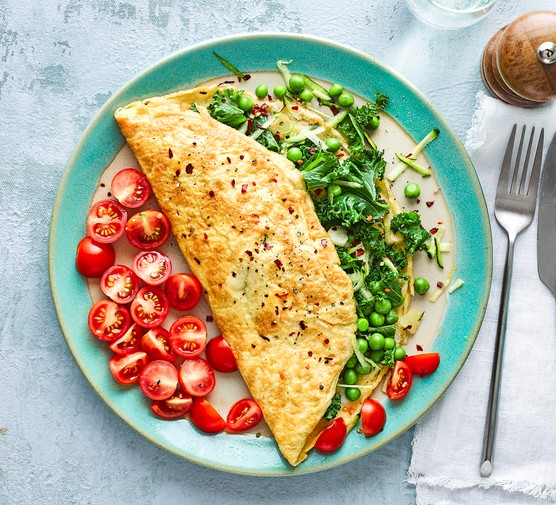
1. Beat 2–3 eggs in a bowl.
2. Chop spinach, mushrooms, and bell pepper.
3. Sauté veggies in a pan with a bit of oil.
4. Pour in eggs and cook until set.
5. Fold and serve warm.
A light and refreshing layered breakfast with yogurt, fruit, and crunch.
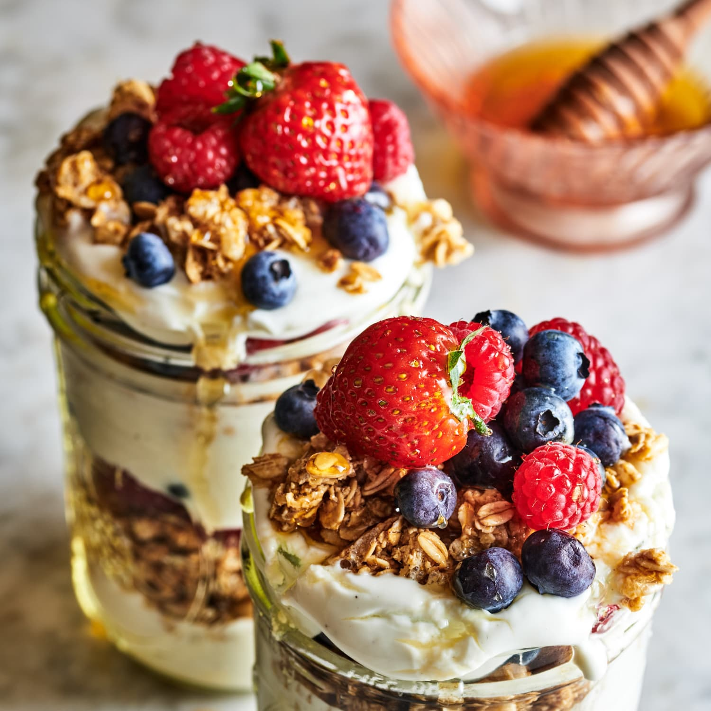
1. Spoon a layer of yogurt into a glass.
2. Add sliced fruit like banana or berries.
3. Sprinkle granola or crushed nuts.
4. Repeat layers and drizzle honey on top.
5. Serve chilled.
Classic golden pancakes that are soft, fluffy, and perfect with natural honey and fresh berries.
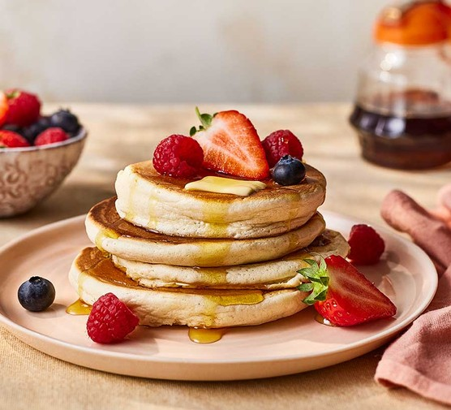
1. In a bowl, mix 1 cup flour, 1 tbsp sugar, 1 tsp baking powder, and a pinch of salt.
2. Whisk in 1 egg, ¾ cup milk, and a splash of melted butter until smooth.
3. Heat a non-stick pan over medium heat and lightly grease it.
4. Pour batter into small circles and cook until bubbles form.
5. Flip and cook the other side until golden.
6. Serve with honey and fresh fruits.
A light yet filling wrap with grilled chicken, veggies, and a creamy sauce.
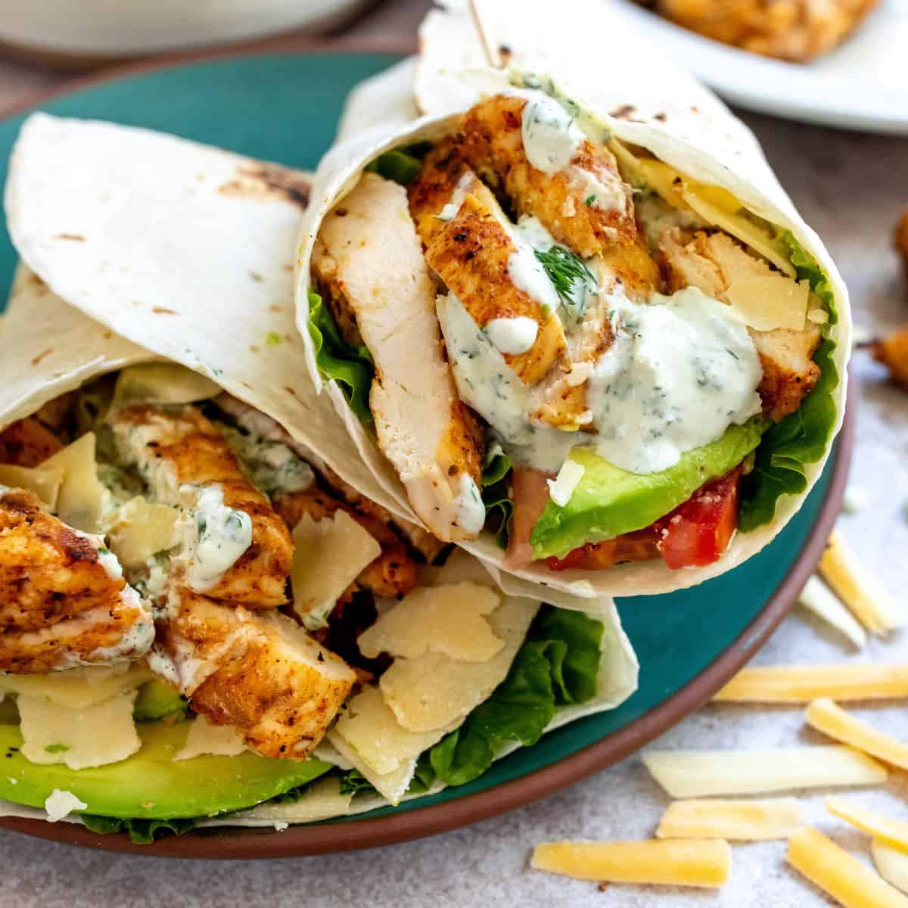
1. Grill seasoned chicken breast and slice into strips.
2. Chop fresh vegetables.
3. Heat the tortillas in a pan for a minute on each side.
4. Fill a tortilla with chicken, lettuce, sliced tomato, cucumber, and a spoon of yogurt or cream sauce.
5. Roll tightly and cut in half.
6. Serve warm or chilled.
A nourishing bowl with fluffy quinoa, fresh vegetables, and a tangy dressing.
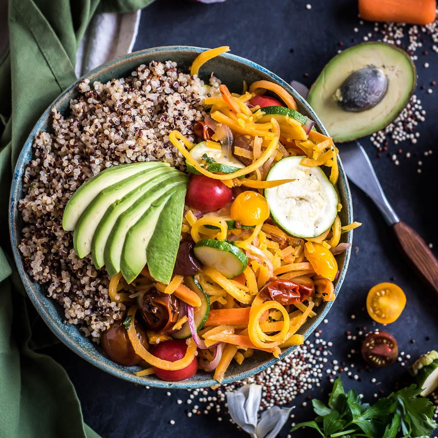
1. Cook quinoa according to package instructions.
2. Dice and sauté carrots, broccoli, and bell peppers until tender.
3. Mix veggies with quinoa.
4. Drizzle with olive oil and lemon juice, and toss to combine.
A comforting oven-baked dish layered with potatoes, carrots, and a cheesy cream sauce—simple and satisfying.
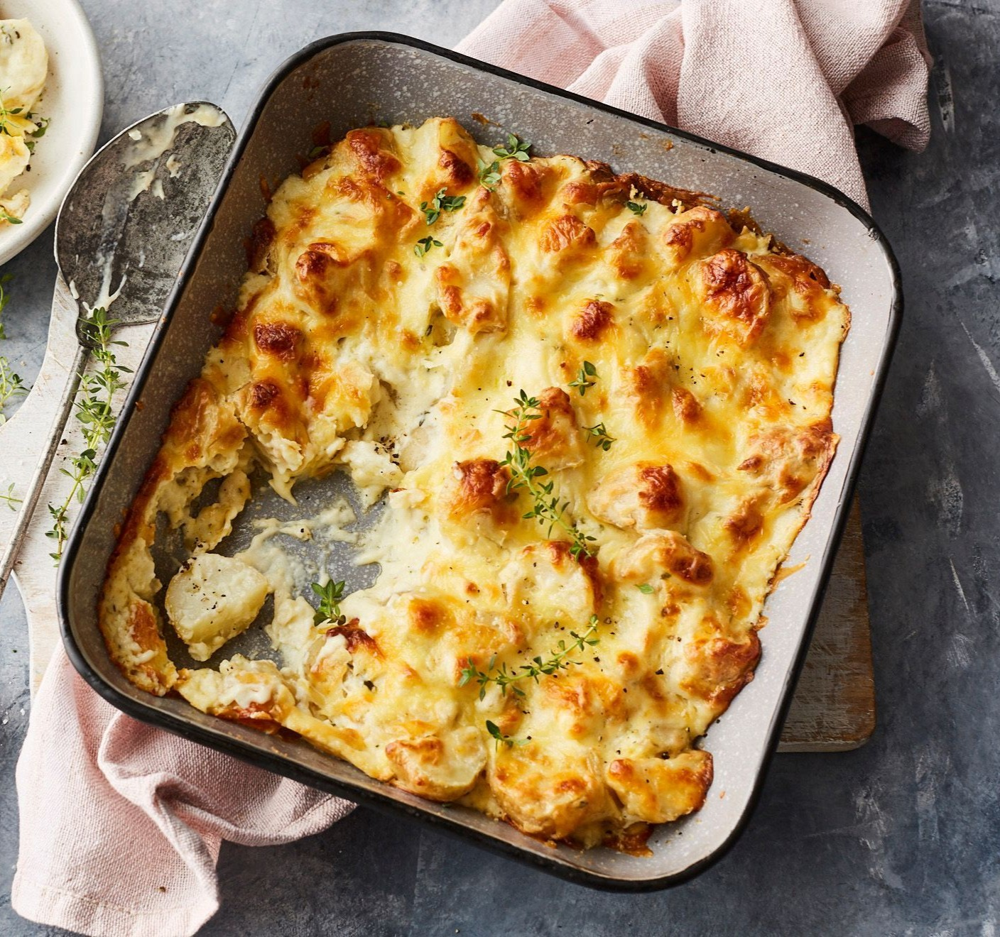
1. Peel and thinly slice 2–3 medium potatoes and 2 carrots.
2. In a saucepan, heat 1 cup cream with ½ cup milk, a pinch of salt, pepper, and a bit of garlic or onion powder. Let it simmer for 2–3 minutes, stirring occasionally.
3. In the baking dish, layer potatoes and carrots alternately. Pour a bit of the warm cream mixture over each layer.
4. Top with grated cheese
5. Cover with foil and bake for 35–40 minutes, then uncover and bake for another 10 minutes until golden on top.
A flavorful and quick dinner made with tender beef, crisp broccoli, and a savory soy-garlic sauce.
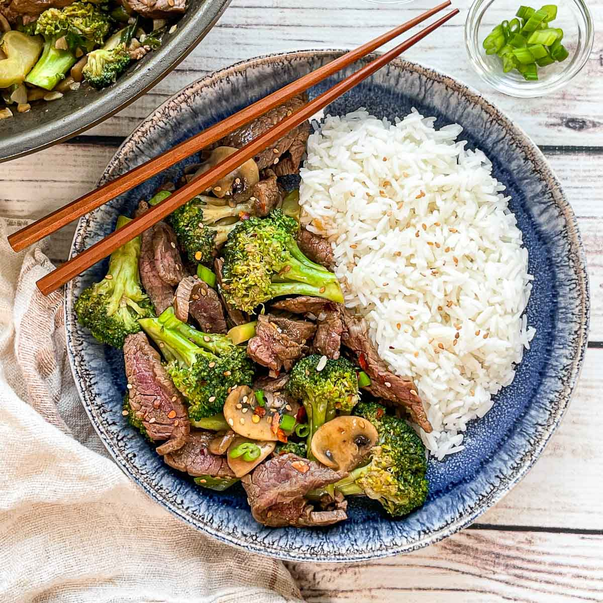
1. Slice beef strips thinly and season with a bit of salt and pepper.
2. In a pan, sauté the beef in a little oil until browned, then remove and set aside.
3. Stir-fry broccoli florets in the same pan with garlic for 2–3 minutes.
4. Add beef back, pour in soy sauce mixed with a splash of water and cornstarch, and stir until the sauce thickens.
5. Serve hot over steamed rice.
A hearty vegetarian skillet dinner with earthy mushrooms, fluffy quinoa, and a creamy finish.
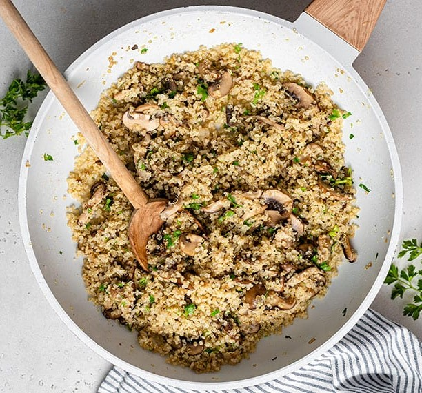
1. Cook quinoa in water or broth until fluffy, then set aside.
2. In a skillet, cook chopped onion and mushrooms in olive oil until soft.
3. Stir in cream and season with salt, pepper, and thyme.
4. Add the cooked quinoa, mix well, and heat through.
5. Serve with a sprinkle of grated cheese if desired.
A light yet filling dinner featuring oven-baked salmon paired with seasoned potato wedges.
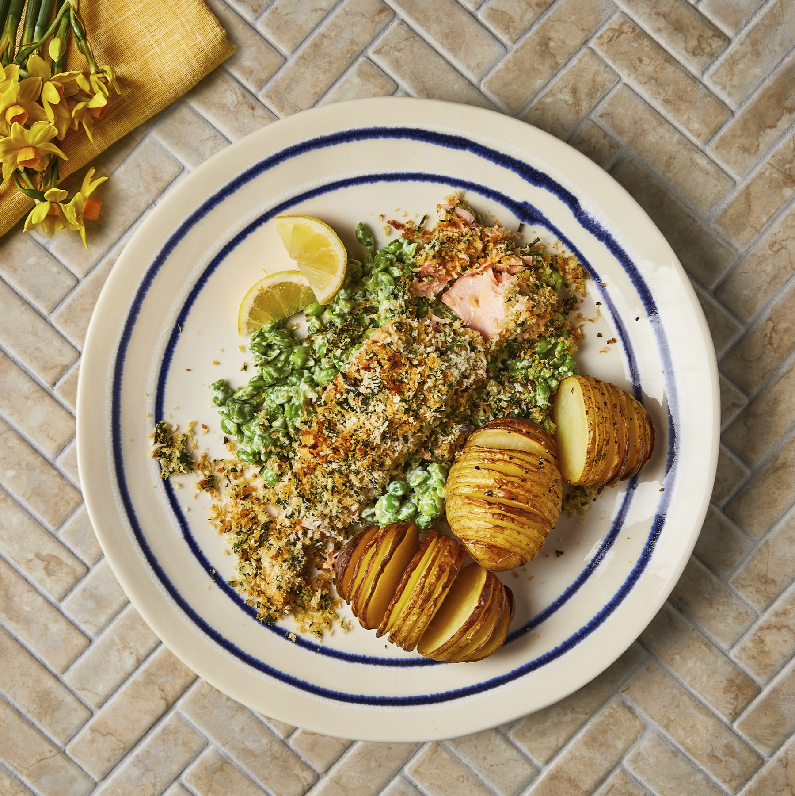
1. Preheat oven to 200°C (390°F).
2. Toss potato wedges with olive oil, salt, pepper, and rosemary. Spread on a baking tray.
3. Place salmon fillets next to the potatoes, season with lemon juice, herbs, and a little butter.
4. Bake everything together for about 20–25 minutes, or until the potatoes are crisp and salmon is flaky.
5. Serve warm with a side of cucumber salad.
A rich and creamy chocolate dessert perfect for any occasion.
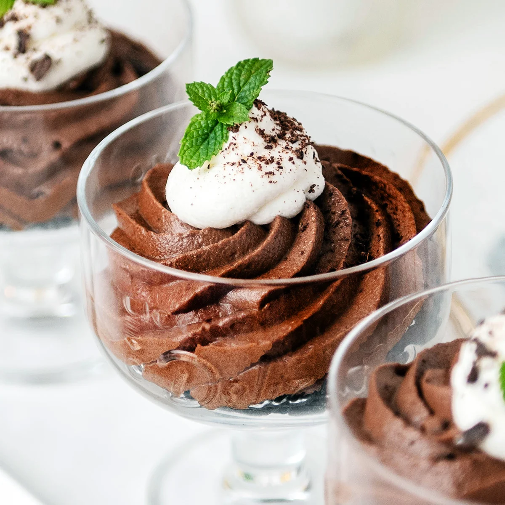
1. Melt dark chocolate.
2. Whip cream and fold into the chocolate.
3. Chill in the fridge and serve.
A warm and comforting dessert made from simple ingredients like rice, milk, and a touch of cinnamon.
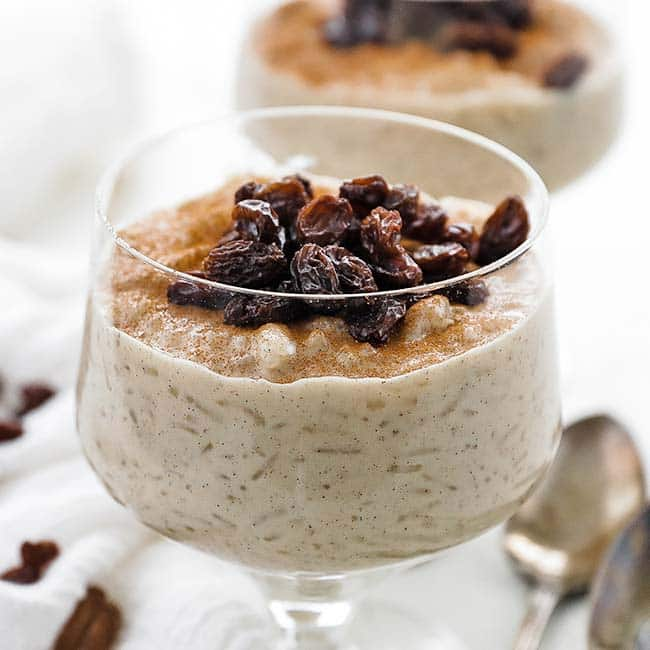
1. In a saucepan, simmer cooked rice with milk and a bit of sugar over low heat.
2. Stir frequently until it thickens and becomes creamy.
3. Add a splash of vanilla extract and a pinch of cinnamon.
4. Serve warm or chilled, topped with raisins or a sprinkle of cinnamon.
A moist, fluffy cake with a light vanilla flavor and a tangy touch of yogurt. Perfect on its own or with fresh fruit.
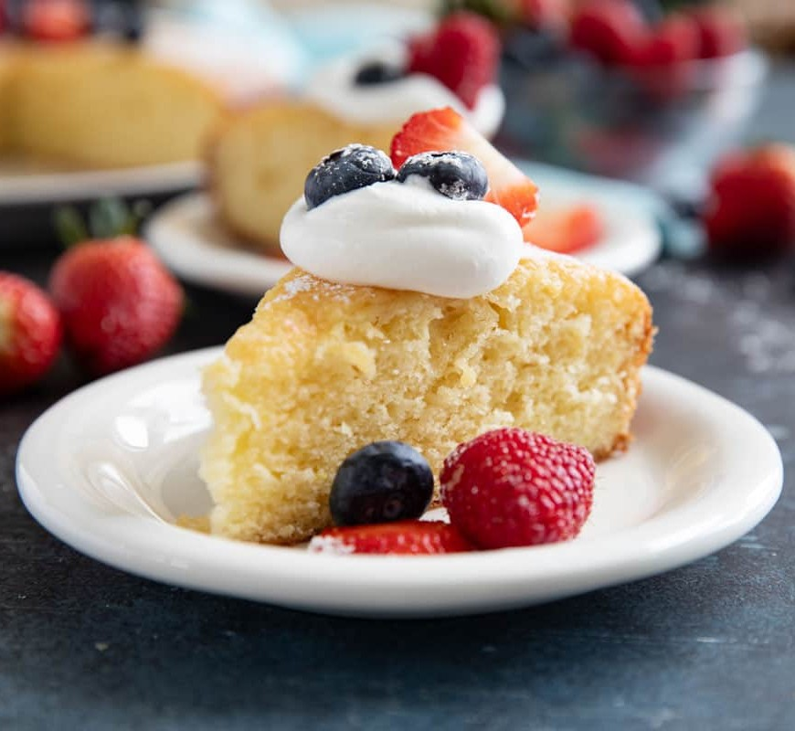
1. Preheat your oven to 175°C (350°F) and grease a round cake pan.
2. In a bowl, mix 1 cup plain yogurt, ¾ cup sugar, and 2 eggs, add ½ cup oil, 1 tsp vanilla extract, and stir until smooth.
3. Sift in 1½ cups flour, 2 tsp baking powder, and a pinch of salt. Mix gently until just combined.
4. Pour the batter into the pan and bake for 30–35 minutes, or until a toothpick comes out clean.
5. Let it cool, then dust with powdered sugar or top with berries and cream.